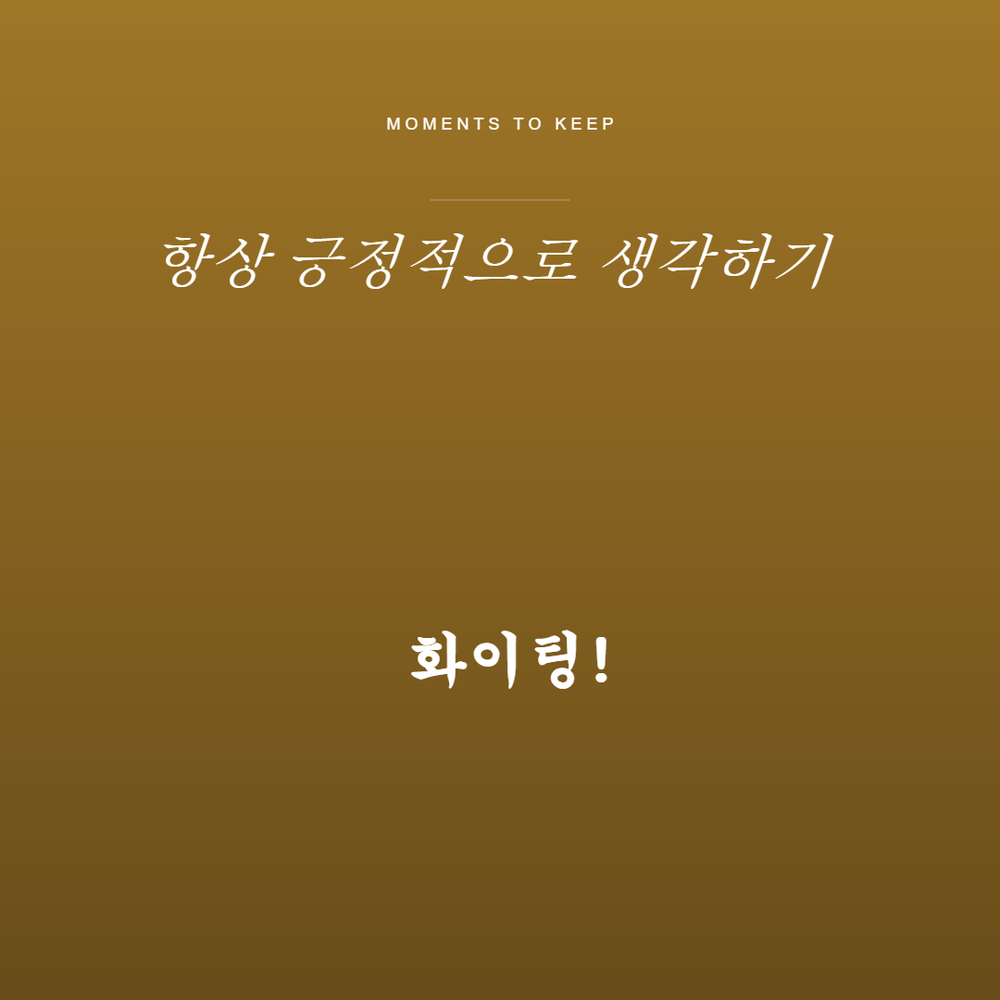
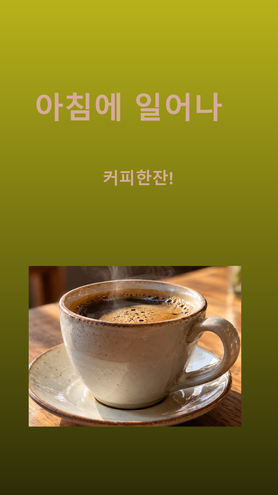

ChatGPT 생성 이미지를 활용해 직접 만든 편집기에서 문구·색상·배치를 구성한 결과물입니다.


세 파일의 정상 열림, 서로 다른 화면비와 문구, 위치정보 메타데이터 0건을 확인했습니다. 이름만 변경하여 복사했으며 업로드 원본의 이미지 내용은 그대로입니다.
C27 출처·권한 기록 · 이미지 검사·원본 해시 · 최신 앱 자동 검사 23건 · 로직 검사 13건 · 전체 소스 ZIP
어디로: 편집기 첫 화면.
무엇을: ① PNG/JPEG 불러오기 ② 사진·문구 편집 ③ 비율 선택 후 저장.
통과 모습: 저장 결과가 미리보기의 잘림·위치·줄바꿈과 같음.
실패 안내: 잘못된 파일의 거부 이유가 보이며 기존 작업이 유지됨.
AI에게 맡긴 일: 편집기 구현·자동 검사와 책·커피 이미지 생성.
직접 판단한 일: 편집 방식과 완성본의 문구·색·배치.
그대로 따르지 않은 일: 고정 템플릿 글자를 편집 가능하게 바꾸고 비율 유지 체크박스를 제거하도록 요청함.